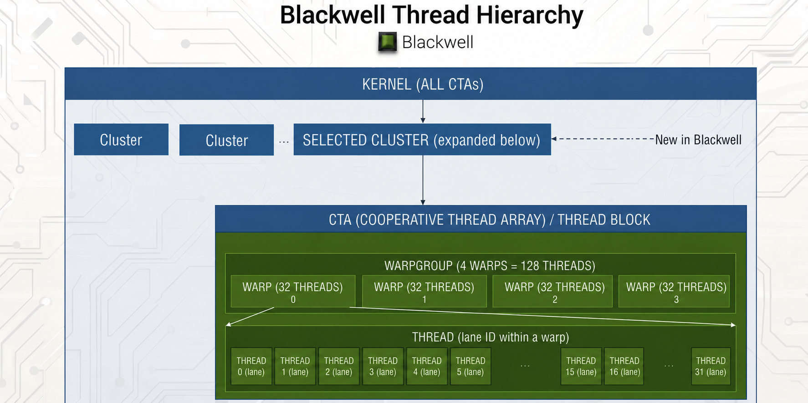

1. Blackwell Background¶
Blackwell kernels coordinate thread groups, memory spaces, TMA,
tcgen05, barriers, and CTA clusters.
1.1. Thread Hierarchy¶
Blackwell organizes threads into a nested hierarchy:

Fig. 1.1.1 Blackwell Thread Hierarchy¶
CTA — short for Cooperative Thread Array, the same concept that CUDA programmers know as a thread block. It is the basic scheduling unit: a CTA runs on a single SM and has access to that SM’s shared memory.
Warpgroup: 4 consecutive warps (128 threads). On Blackwell, the warpgroup is the cooperation unit for TMEM reads — the 128
TLanerows match the 128 threads one-to-one.Warp: A warp contains 32 threads and is the basic SIMT (single instruction, multiple threads) execution unit. The threads in a warp issue the same instruction together, while each thread keeps its own registers, lane ID, and data.
Thread: Each thread is identified by a lane ID within its warp.
Cluster: A group of cooperating CTAs. Clustered kernels use clusters for cross-CTA cooperation, multicast TMA, and 2-CTA cooperative MMA.
These levels matter because Blackwell operations are not all issued by
the same group of threads. A TMA copy is issued by one thread and
completed by hardware; a TMEM-to-register load is warpgroup-cooperative;
a tcgen05.mma commit is issued by an elected thread; clustered MMA
may involve multiple CTAs.
1.2. Memory Spaces¶
Blackwell kernels use a memory hierarchy spanning GMEM, SMEM, TMEM, and registers:
Memory |
Ownership |
Role |
Description |
|---|---|---|---|
Global Memory (GMEM) |
Device-wide |
Persistent tensor storage |
Large capacity HBM, shared by all SMs |
Shared Memory (SMEM) |
Per-CTA (on one SM) |
Tile staging |
Low-latency scratchpad; up to 228 KB per SM on B200 / compute capability 10.0 |
Tensor Memory (TMEM) |
Per-SM |
MMA accumulator storage |
Dedicated Blackwell
scratchpad used by
|
Register File (RF) |
Per-thread |
Scalar and per-thread tile fragments |
Fast per-thread storage used for epilogues, scalar math, and temporary values |
Each memory space has different access rules. GMEM is the large persistent store, SMEM is the staging area for tiles, TMEM holds MMA accumulators, and registers hold per-thread values used by the epilogue.
Tensor Memory (TMEM) is new in Blackwell. It is a per-SM,
high-bandwidth scratchpad memory used by the tcgen05 MMA path.
Unlike earlier GPU generations where large MMA accumulators lived in
registers, Blackwell writes tcgen05 accumulator output directly to
TMEM first. The kernel then explicitly reads those results from TMEM
into registers, or stages them through shared memory for output.
TMEM reads are explicit and cooperative. To consume MMA results, the kernel explicitly loads from TMEM into the register file. These reads are performed cooperatively by the full warpgroup (128 threads).
TMEM uses its own addressing and allocation model. It is not accessed like normal memory; instead, it uses a special 2D address space whose rows are indexed by a hardware axis called
TLane(128 lanes) and whose columns are indexed byTCol(up to 512 columns). TMEM must be explicitly allocated and deallocated.
1.3. TMA¶
TMA is a hardware unit that asynchronously copies rectangular tiles between global memory and shared memory. A kernel issues a tile copy, and the TMA engine performs the transfer in the background.
Single-thread launch: One thread issues the TMA operation, and the hardware performs the actual tile transfer asynchronously in the background. TMA does not require all CTA threads to execute explicit load/store instructions.
Swizzled layouts: TMA can apply layout swizzling during the transfer, helping produce shared-memory layouts that are friendly to Tensor Core access.
Barrier integration: TMA works with mbarriers. The transfer has an expected byte count, and the hardware signals completion when that amount of data has arrived.
Store support: TMA is not only for GMEM→SMEM loads; it can also store data from SMEM back to GMEM. TMA stores use a commit-group / wait-group mechanism for completion tracking.
TMA changes tile movement from a per-thread load/store loop into an asynchronous hardware operation with byte-count tracking and explicit completion synchronization.
1.4. Tensor Cores and Blackwell MMA¶
Tensor Cores are the hardware units that execute dense matrix multiply
at tile granularity. Blackwell exposes this compute path through the
tcgen05 MMA instruction family. tcgen05 does not include TMA:
TMA is the data-movement path, while tcgen05 is the compute path.
At the math level, a Tensor Core instruction performs a tile-granularity matrix multiply-accumulate:
Tensor Cores are different from CUDA cores, the GPU’s general-purpose SIMT ALUs. CUDA cores execute scalar and vector instructions for indexing, elementwise math, reductions, and control flow. Tensor Cores execute dense tile-level MMA instructions for GEMM, convolution, and attention. Both engines live on the same SM, but dense linear algebra relies on Tensor Cores for peak throughput.
On Blackwell, an MMA operation has three hardware contracts that kernel code must coordinate:
Cooperation scope. An MMA may involve a warpgroup, and some Blackwell modes allow two CTAs to cooperate on one MMA tile.
Operand location. MMA operands are described as tiles in SMEM, and some Blackwell variants can also use TMEM.
Asynchronous completion. The MMA instruction issues work and returns before the hardware finishes; completion is tracked separately with barriers.
One Blackwell-specific detail is where the MMA result lives.
tcgen05.mma does not keep large accumulator tiles in registers
during the whole compute phase. It writes them to TMEM, a 128 × 512
32-bit scratchpad per SM. Later, the kernel reads the needed TMEM values
into registers for the epilogue and writes the final result back to
GMEM.
The GEMM chapters use this path directly: TMA stages operand tiles,
tcgen05.mma computes into TMEM, and the epilogue reads TMEM to
produce the output. A slow kernel waits for each tile load before
starting the matching MMA. A fast kernel overlaps them: while the Tensor
Core computes on the current tile, TMA brings in the next tile. This is
why Blackwell GEMM needs both asynchronous data movement and
asynchronous compute, plus barriers to hand data from one hardware unit
to the next.
1.5. Memory Barrier (mbarrier)¶
mbarriers are hardware synchronization primitives stored in shared memory. They combine a counter with a phase bit to enable reusable, asynchronous synchronization.
Lifecycle of an mbarrier:
Init: Set the expected number of arrivals. The barrier starts at phase 0.
Arrive: Each arrival decrements the counter. There are three ways to arrive:
TMA auto-arrive: The hardware arrives automatically once the byte transfer completes.
tcgen05 auto-arrive: The hardware arrives once committed MMAs complete.
Thread arrive: A thread arrives explicitly, for example to signal that a shared resource can be reused.
Wait: A consumer waits until the barrier reaches the expected phase for that iteration, which indicates that all required arrivals have completed.
Phase flip: Once all arrivals are done, the barrier automatically toggles its phase (0 → 1 → 0 → …). This lets the same barrier be reused across loop iterations: iteration 0 uses phase 0, iteration 1 uses phase 1, iteration 2 uses phase 0 again, etc.
The producer-consumer pattern is direct: a producer (for example, TMA) arrives on a barrier when data is ready, and the consumer waits before using the data.
1.6. Synchronization Rules¶
Blackwell kernels mix ordinary thread instructions with asynchronous
engines such as TMA and tcgen05 MMA. The rule is simple: whenever
one hardware path produces data and another path consumes it, the kernel
must make that handoff explicit.
There are three common handoffs:
Thread code to hardware engine. If threads write SMEM and a later MMA or TMA store reads it, the kernel needs a thread-level synchronization or fence first.
TMA to MMA. If TMA fills SMEM, the MMA side must wait until the TMA transfer has completed before reading that tile.
MMA to epilogue. If
tcgen05.mmawrites TMEM, the epilogue must wait until the MMA has completed before reading the result.
The same rule applies before releasing resources such as TMEM: every CTA that may still read or write the resource must be finished first. The GEMM chapters spell out the exact waits and fences used for each handoff.
1.7. CTA Clusters¶
Blackwell supports CTA clusters: groups of CTAs that can cooperate more tightly than independent thread blocks. A clustered kernel can coordinate CTAs across multiple SMs, access peer CTA shared memory, and synchronize work across the cluster.
Clusters matter for large tile kernels because one CTA’s local SMEM budget is finite. Cooperative MMA can let multiple CTAs contribute SMEM operands to one larger MMA tile. TMA multicast is a separate cluster feature: one TMA load can deliver the same GMEM tile to multiple CTAs, reducing repeated global-memory traffic.
1.8. Numbers to Keep in Mind¶
Keep these orders of magnitude in mind when reading the GEMM chapters. They explain why kernels stage only a few operand tiles, manage TMEM explicitly, and work hard to keep Tensor Cores fed.
Quantity |
Value (B200, approx.) |
Where it shows up |
|---|---|---|
Streaming multiprocessors per GPU |
148 |
grid sizing, persistent schedulers |
Shared memory per SM |
228 KB on B200 / compute capability 10.0 |
SMEM budget for pipeline depth |
Tensor memory per SM |
128 lanes × 512 cols (32-bit) |
TMEM accumulator budget |
Registers per thread (max) |
255 × 32-bit |
why large accumulator tiles are not kept entirely in RF |
Tensor Core peak @ FP16/BF16 (dense) |
order of 2 PFLOPS |
GEMM roof; exact value depends on SKU and clock |
Tensor Core peak @ FP8 / FP4 (dense) |
several PFLOPS |
mixed-precision GEMM; exact value depends on SKU, clock, and sparsity mode |
HBM3e bandwidth |
~8 TB/s |
bandwidth roof |
L2 cache |
device-specific; 126 MB on GB200 |
where tile operands actually live after warm-up |
One fp16 128×64 tile in SMEM |
16 KB |
TMA transfer granularity |
NVIDIA often reports multiple peak numbers depending on dtype, sparsity mode, and product SKU. Use the table as scale, not as a full performance model: SMEM can hold only a small number of staged operand tiles, TMEM must be budgeted for accumulator tiles, and Tensor Core throughput is high enough that data movement has to overlap compute.